שלב 01
מערכת אחת. שני פורטופודים.
זו הסוליה של אפוס4 מלמטה. שתי יחידות ביומכניות קמורות — פורטופודים — מחוברות לכל נעל ומשנות את נקודת המגע של כף הרגל עם הקרקע.
מערכת הליכה ביומכאנית, מכוילת אישית לדפוס ההליכה שלכם. כ־10 דקות הליכה ביום בתוך שגרת החיים — בלי ניתוח ובלי תרופות.
מעל 250,000 מטופלים בארץ ובעולם
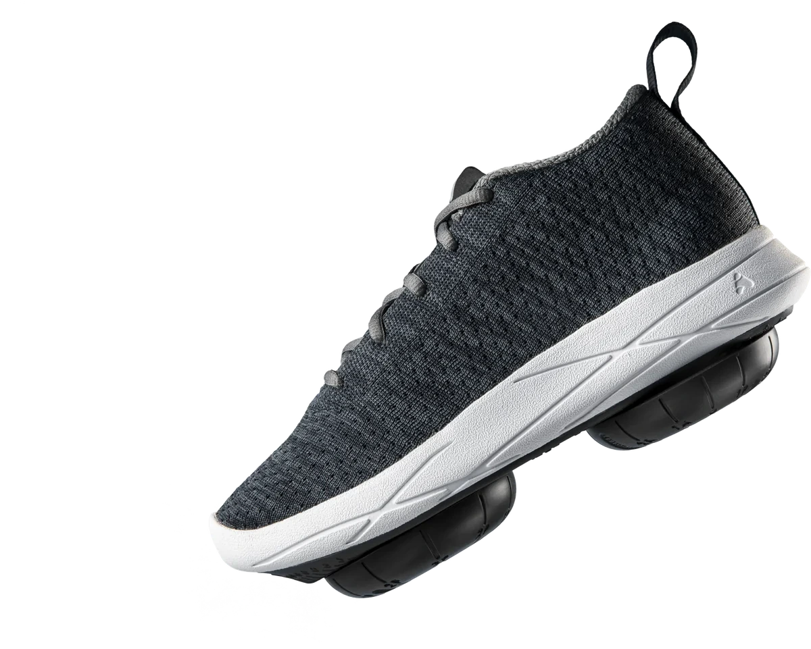
זו הסוליה של אפוס4 מלמטה. שתי יחידות ביומכניות קמורות — פורטופודים — מחוברות לכל נעל ומשנות את נקודת המגע של כף הרגל עם הקרקע.
כל פורטופוד ננעל למסילה ייעודית בסוליה וניתן לשחרור. זה מה שמאפשר לשנות את המיקום שלו — ואיתו את חלוקת העומסים על הברך, הירך והגב.
הסרגלים החרוטים על הסוליה הם מערכת קואורדינטות: M1–M7 ו־L1–L7 לרוחב, A1–A2 ו־P1–P6 לאורך. לפיהם נקבע המיקום המדויק של כל יחידה.
על בסיס ניתוח ההליכה הממוחשב, הצוות הרפואי קובע לכל פוד קואורדינטה משלו. אין שתי מערכות זהות, ובכל ביקור מעקב הכיול מדויק מחדש.
כ־10 דקות הליכה ביום בתוך השגרה. כל צעד יוצר גירוי תנועתי מבוקר שמאמן מחדש את השרירים ומחזיר תנועה מאוזנת ויעילה.
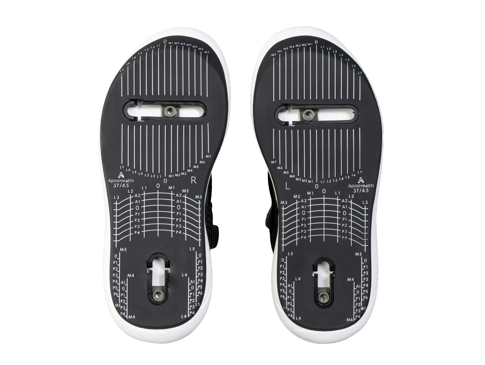
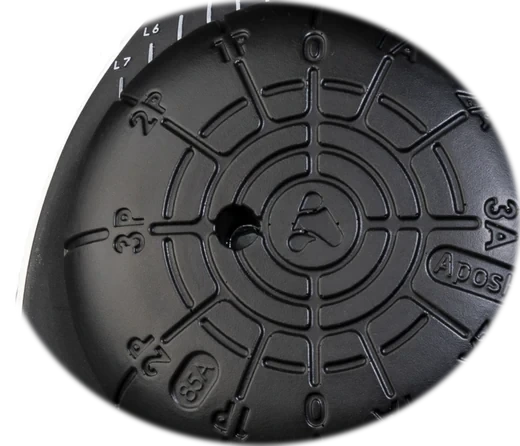
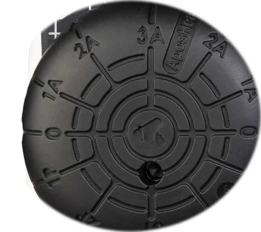
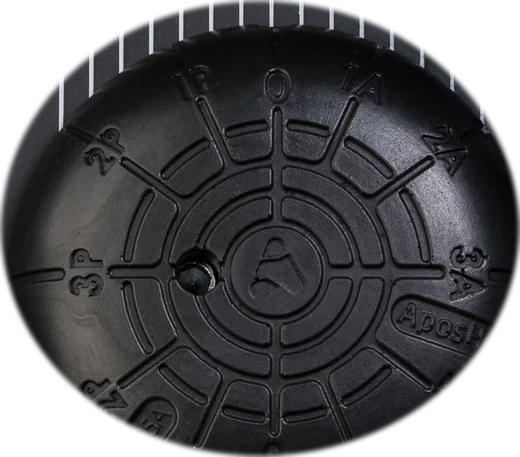
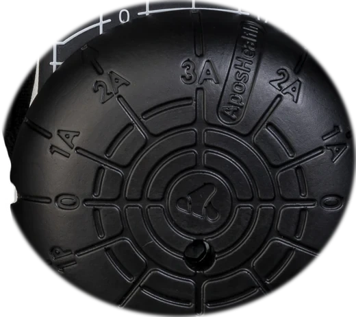
מעל 70 פרסומים מדעיים ו־53 מחקרים קליניים, בהם מחקר אקראי מבוקר שפורסם ב־JAMA.
בחרו אבחנה כדי לראות איך משתנה מיקום הפודים על הסוליה. כל התמונות הן צילומי מערכת אמיתיים.
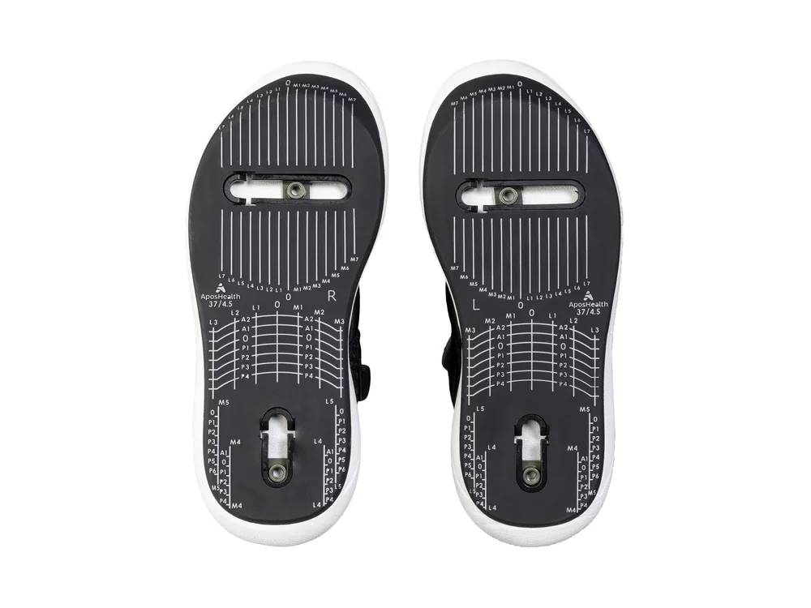
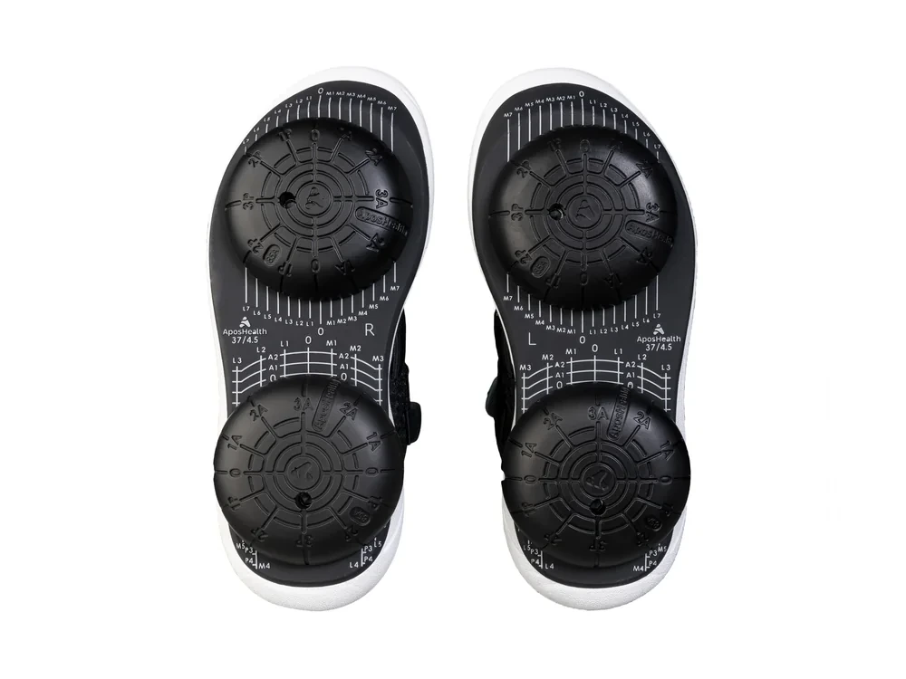
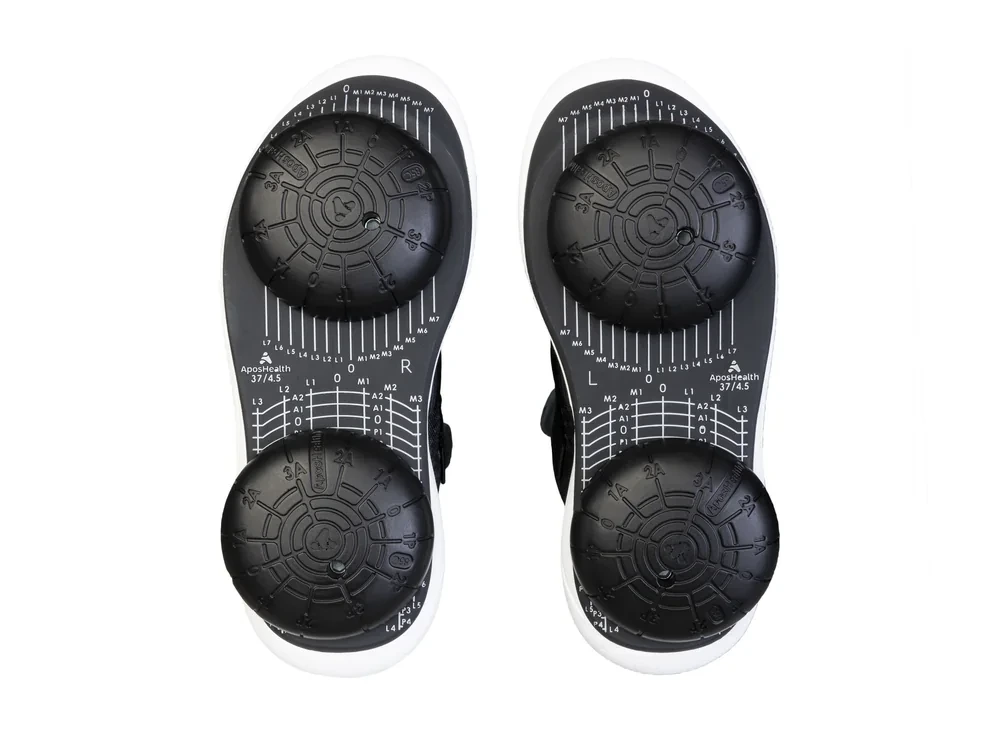
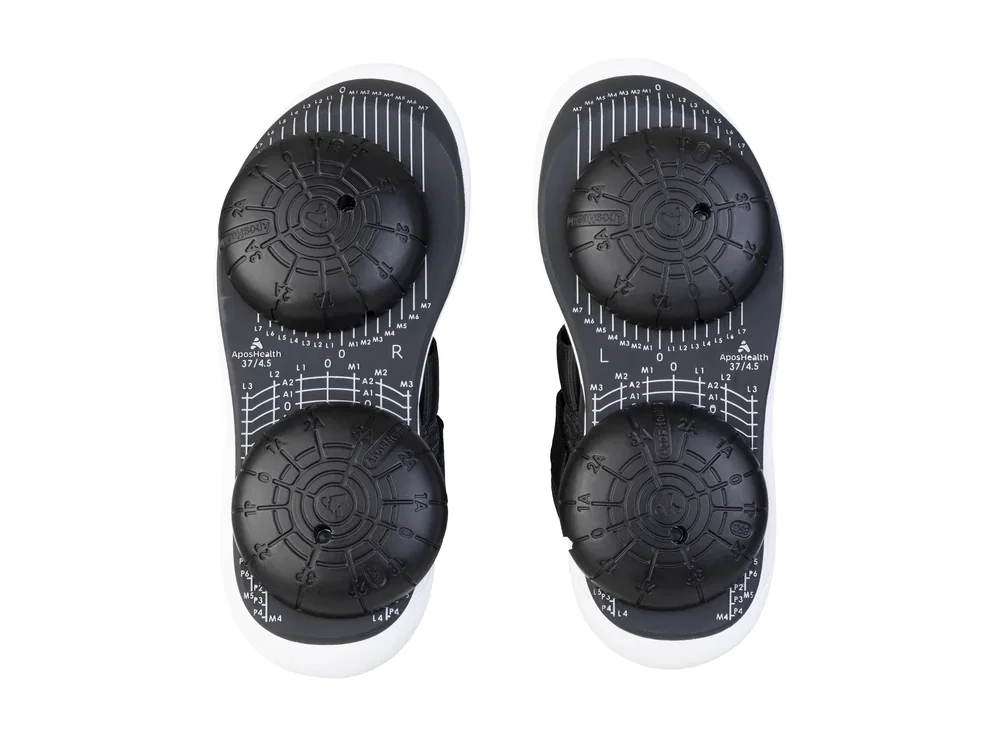
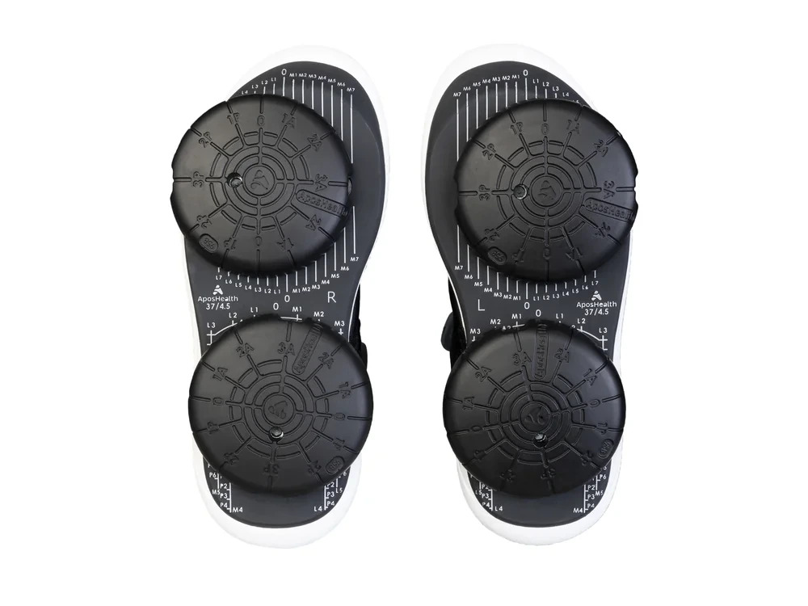
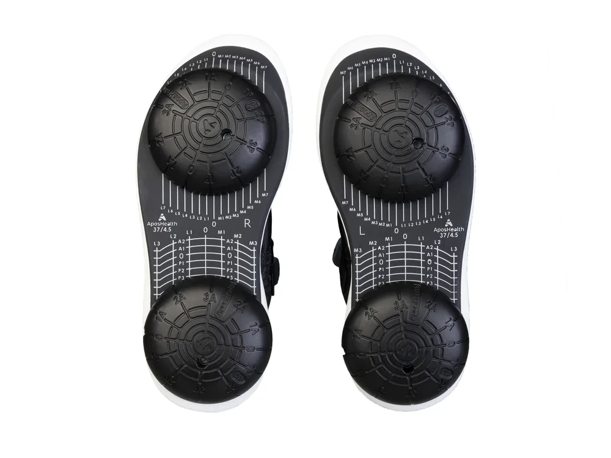
כל צעד מספר את הסיפור של הגוף. מעבדת ההליכה של אפוס, היחידה מסוגה בישראל, מנתחת את הדרך שבה הגוף נע — ובתוך דקות מתקבלת תמונה מדויקת של דפוס ההליכה, חלוקת העומסים ואזורי חוסר האיזון.
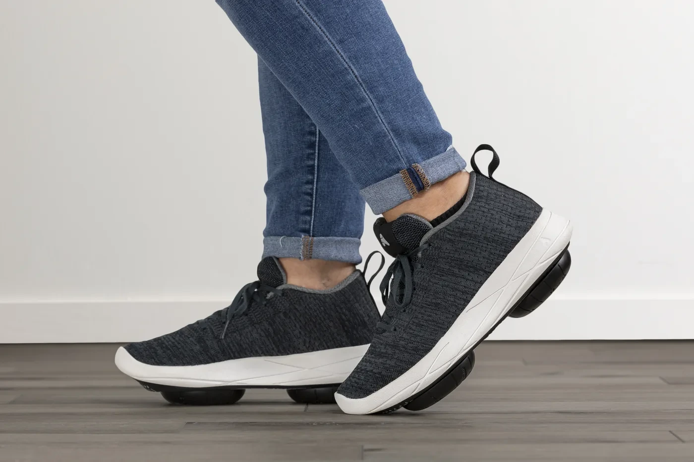
אוסטיאוארתריטיס, שחיקת סחוס, קרע במיניסקוס, מים בברך ופגיעות רצועה.
כואבת לי הברך ←כאבי גב תחתון, פריצת דיסק וכאב המקרין לרגל, תוך שיפור היישור והאיזון.
כואב לי הגב ←דלקת ניוונית במפרק הירך ושיקום סביב ניתוח החלפת מפרק.
כואבת לי הירך ←נקעים חוזרים, כאב כרוני, אי־יציבות וקרע בגיד אכילס.
כואב לי הקרסול ←אתם קובעים את הזמן והמקום. הטיפול משתלב בשגרה — לא משתלט עליה.
הערכה קלינית מעמיקה וניתוח הליכה ממוחשב, שעל בסיסם מכוילת מערכת אישית.
נועלים את המערכת כ־10 דקות ביום בזמן פעילות רגילה. הגוף לומד תוך כדי תנועה.
בביקורי המשך נמדדים שוב כאב, תפקוד והליכה — והכיול מכוונן בהתאם.
השרירים מתואמים ושולטים נכון בתנועה. הכאב נשאר מאחור, ללא ניתוח.
★★★★★״כאב ברכיים, פריצת דיסק, בלט וכאבי קרסול הפכו את חייו של דני לכואבים. בתוך חודשיים של טיפול אפוסתרפיה הרגיש שיפור משמעותי וחזר לתפקוד.״
★★★★★״מיכל סבלה מקרע במיניסקוס וכאבי ברכיים. בעקבות המלצה של פיזיותרפיסטית הגיעה לאפוסתרפיה — וחייה השתנו.״
★★★★★״נועה סבלה מפריצת דיסק, שהובילה את חייה מפעילים למשתקים. נועה התמידה בטיפול אפוסתרפיה ובכך ניצחה את הכאב.״
כל צעד עם המערכת מסיט את העומס מהמפרק הכואב ומאמן את השרירים לשלוט נכון בתנועה. בלי תרופות, בלי ניתוח.
השאירו פרטים והצוות הרפואי יחזור אליכם לתיאום בדיקת התאמה — ללא עלות וללא התחייבות.
מלאו את הפרטים ונחזור אליכם בהקדם.
או התקשרו עכשיו *0000
בזכות מעבדת ההליכה המקצועית של אפוס — הפרטית היחידה בארץ — ניתן לאתר מיד את מקור הכאב ולהתאים את המערכת באופן אישי ומדויק.
עותק הדגמה לפורטפוליו · Built by Gal Asulin, IT Manager